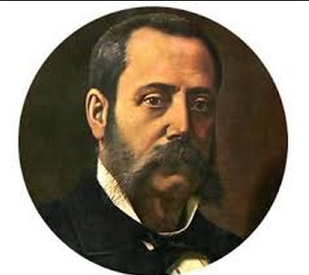
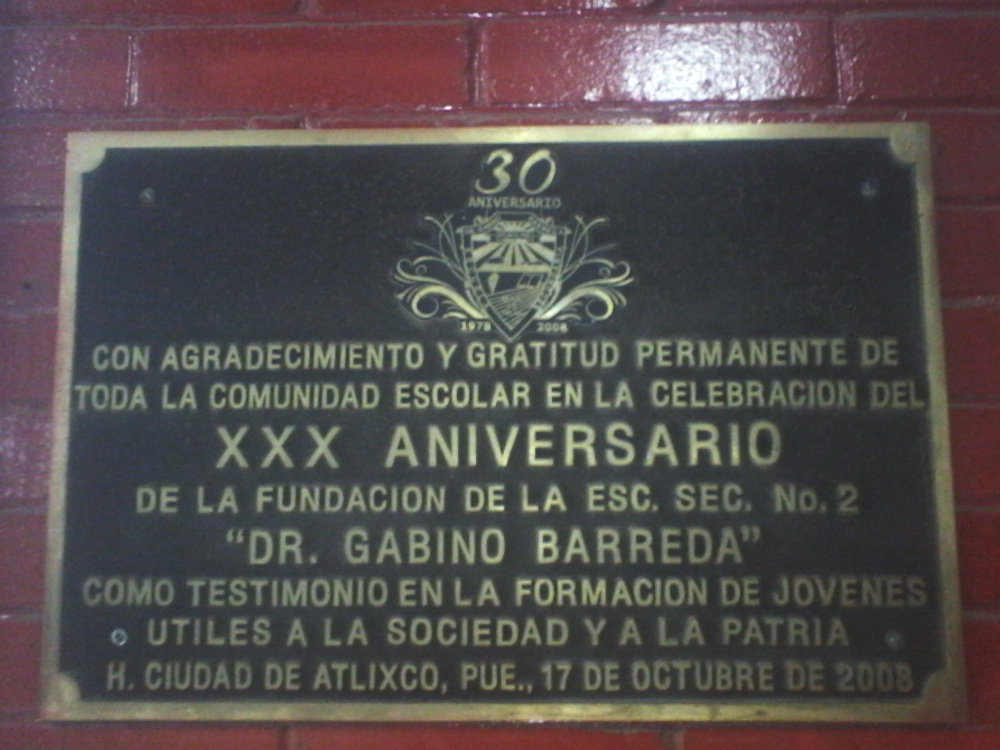
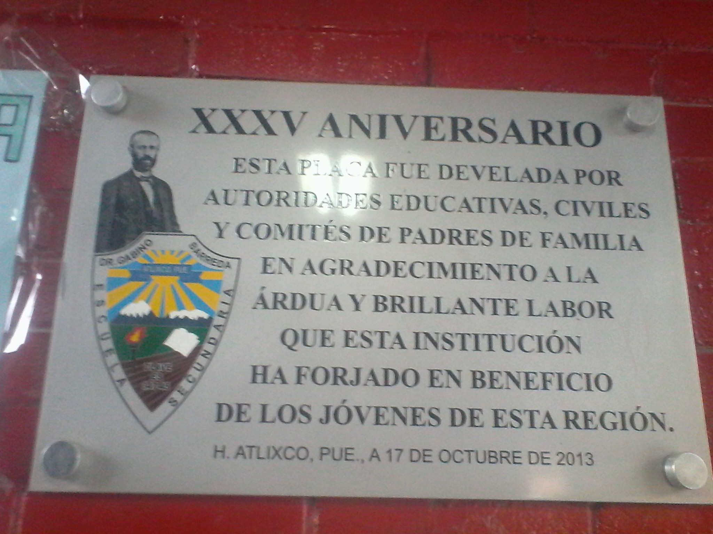

Toda institución educativa es sembradora de la verdad, porque son medios para acercar a la humanidad con la cultura.
El día que nace una escuela se abren los horizontes del provenir y se iluminan los caminos de la superación de nuestros pueblos.
Hablar de la historia de una escuela es revivir los valores, es conocer ejemplos a seguir y es comprender el proceso evolutivo de un lugar; por todo esto se da a conocer que con la intervención y apoyo de diversas autoridades de la Secretaria de Educación Publica y del gobierno del estado fue posible la fundación de nuestra escuela secundaria “DR. GABINO BARREDA”
Por comentarios recibidos por algunas personas se sabe que el director de la Escuela Secundaria Federal “MELCHOR OCAMPO” Profr. José Antonio Quintero Arteaga y el club de leones de este lugar, hicieron gestiones tendientes a lograr una escuela secundaria en esta localidad, solo que dichas peticiones no fueron atendidas por las dependencias a las que fueron turnadas.
En la ciudad de Atlixco al presentarse la incertidumbre de que las escuelas de segunda enseñanza pertenecientes al sistema federal o estatal ya no tenían capacidad para poder captar todas la solicitudes de ingreso, la demanda de la juventud se hacia inminente y esto trajo como consecuencia que las autoridades educativas concedieran su autorización para que el DIA 17 DE OCTUBRE DE 1978 se iniciaran los trabajos de fundación de la Escuela Secundaria Federal No.2 y que actualmente lleva el nombre del ilustre poblano “DR. GABINO BARREDA”

Fue el comité de la Asociación de Padres de Familia de la escuela secundaria federal “MELCHOR OCAMPO” periodo 1977-1978 quien preocupados por resolver el problema de sobrepoblación escolar de Educación Secundaria realizo varias gestiones verbales y escritas ante diferentes funcionarios.
En primer lugar mencionaremos el acuerdo favorable por parte del C. Profr. Justo A. Zamudio Vargas, Director General de Educación Secundaria, quien autorizo la fundación de esta escuela el 17 de octubre de 1978
Lic. JoséÁngel Torres Rodríguez, Delegado General de la Secretaria de Educación Publica en el Estado funcionario que siempre cumplió con las finalidades de la descentralización administrativa, llevando los bienes y servicios asta el lugar que se necesitan; nuestra escuela agradece sus acciones en su etapa de consolidación.
Profr. Raúl Aguilar Romero Subdirector General de la EducaciónBásica de la Delegación General de la secretaria de Educación publica en el Estado; le manifestamos nuestro agradecimiento por resolver favorablemente las justas peticiones en favor de esta institución educativa.
Profr. Sergio Galindo Aguilar Inspector General de Educación Secundaria, responsable educador, interpreto la urgente necesidad de crear esta escuela secundaria, informando a las autoridades correspondientes de este problema para a ser realidad el deseo de los padres de familia que no encontraban acomodo para sus hijos en las escuelas secundarias establecidas en esta región de Atlixco. Así como también fue a quien le solicito la creación del turno vespertino.
Profr. Joel Cortes Valdez antes de la descentralización administrativa ocupo el cargo de jefe del departamento administrativo de escuelas secundarias federales de los estados; habiendo brindado todo su apoyo en la autorización de los primeros nombramientos a favor de profesores y empleados.
Profr. Enrique García Arista funcionario que intervino positivamente en la autorización para la construcción de la tercera etapa de este edificio escolar.
El día martes 17 de octubre de 1978 se iniciaron los trabajos previos y fundaciones de este plantel con clave: ES 347-45. Cumpliendo con las disposiciones superiores se presentaron en esta ciudad y en el lugar que ocupa la escuela secundaria para trabajadores iniciaron los trabajos previos y fundación de la escuela.
Pero esta labor no hubiera sido posible sin la dedicación y el esfuerzo de los maestros fundadores y del principal guía:
MTRO. ELIAS ANDERICA DIAZ
Fundador de nuestra institución educativa, hombre tenaz; que a pesar de encontrar a su paso muchos obstáculos para realizar sus ideales propuestos para la construcción de la misma, no escatimo esfuerzos para lograrlo. A su destacable labor de entonces se debe en gran parte la edificación que ahora se posee y de la que disfruta la juventud estudiosa, fruto de nuestra patria.
La construcción de la primera y el inicio de la segunda etapa se realizaron en su periodo laboral. Del 17 de octubre de 1978 a 30 de septiembre de 1982.

